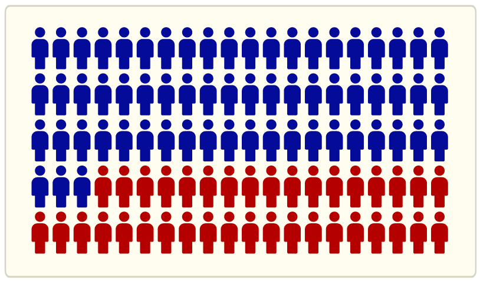

Olá, estudantes! Neste módulo, vamos explorar alguns assuntos sobre organização financeira de um jeito simples e fácil de entender. Vamos falar sobre como lidar com acréscimos e descontos, que afetam os valores dos serviços que contratamos e os preços dos produtos que compramos. Também será abordado o crédito, envolvendo a solicitação de empréstimos de dinheiro, e discutido como os juros podem influenciar o valor dos empréstimos ao longo do tempo. Você aprenderá a investir, que é uma maneira de fazer o dinheiro render, e terá dicas de como evitar o endividamento, para que você possa se sentir mais tranquilo em relação ao seu orçamento. Embarque nessa jornada para entender melhor como cuidar das suas finanças!
No nosso dia a dia, somos expostos a muitas tentações de consumo, como lojas físicas com ofertas e promoções imperdíveis, propagandas de carro, em diferentes meios de comunicação, além das plataformas de comércio on-line e as redes sociais.
Tomados pela emoção ou, até mesmo, por distração, fazemos compras por impulso, adquirindo algo que não precisamos, o que pode levar ao endividamento.
O endividamento excessivo pode trazer sérias consequências financeiras e, até mesmo, morais, causando um impacto negativo na vida das pessoas, no meio ambiente e na sociedade, não sendo poucos os que vivem nessa situação.
Uma pesquisa divulgada pelo e pela revelou que 37% dos consumidores admitem ter comprado algo que não precisavam nos últimos 30 dias.
Como vimos na reportagem, cerca de 37% dos consumidores admitem ter comprado algo desnecessário. Isso significa que 37 em cada 100 brasileiros têm essa atitude. Na figura a seguir, as pessoas em vermelho representam essa porcentagem em relação ao total de pessoas.
SPC-Brasil: Serviço de Proteção ao Crédito
CNDL: Confederação Nacional de Dirigentes Lojistas
Nessa mesma situação, temos uma porcentagem que pode ser representada por meio de fração e de número decimal. Observe:
Cálculo em que 37 por cento é igual a 37 dividido por 100, que também é igual a 37 décimos.
Esse cálculo é muito importante, pois transformar a porcentagem em decimal nos ajuda a calcular acréscimos e descontos em produtos ou serviços adquiridos no dia a dia.
Dívidas são um assunto preocupante. Problemas podem surgir ao não saber lidar bem com elas. Por exemplo, quando um boleto bancário é pago após o vencimento, seu valor é acrescido de taxas correspondentes a multas e juros.
Esses valores extras representam os acréscimos que, quando somados ao preço original, podem pesar nas finanças ou se tornar o motivo de um endividamento.
Por isso, é importante ter a vida financeira organizada de modo a planejar o pagamento de despesas essenciais, como faturas de água e energia elétrica, além de boletos bancários diversos, até as datas de vencimento.
Escute o podcast a seguir ou clique no ícone para ler a transcrição e saber o que Emília está dizendo.
Observe as etapas que podem ser utilizadas para responder à pergunta da Emília.
Emília precisa ligar o sinal de alerta, pois teve que pagar a fatura apresentada com atraso.
Veja agora a situação do Rodrigo, que também terá que pagar com acréscimo uma dívida que está em atraso:
Nossa! Eu me esqueci da mensalidade de setembro do meu curso de inglês, agora terei que pagar com juros. A mensalidade é R$ 360,00, mas terá um acréscimo de 5% devido ao atraso.
Após realizar os cálculos, percebemos que serão acrescidos R$ 18,00 de juros à mensalidade, totalizando R$ 378,00.
Rodrigo e Emília deverão ser mais cuidadosos para não se esquecerem de suas contas, deixando atrasar novamente, a fim de evitar o pagamento a mais de valores que, às vezes, não cabem no orçamento.
Normalmente, consideramos que estamos endividados apenas quando não conseguimos pagar nossas contas. Isso não é verdade, pois quando não conseguimos pagar as dívidas assumidas, já estamos em um patamar de endividamento preocupante, o que pode nos levar a buscar outras fontes de crédito, na tentativa de corrigir o problema.
Para treinar seus conhecimentos, faça os exercícios a seguir.
1) O salário de Marisa é R$ 3.250,00 e, em certo mês, ela recebeu um acréscimo em seu salário de 15% como bônus por um serviço realizado. Assinale a opção que indica o valor do acréscimo e quanto ficará o salário final da Marisa após esse acréscimo.
Gabarito: B
2) A academia Corpofit cobra de seus clientes R$ 129,00 de mensalidade. Na matrícula, a recepcionista explica que mensalidades pagas com atraso têm uma multa de 3% por dia, adicionada ao valor inicial. Assinale a alternativa que indica qual o valor da multa e o valor total pago pelo cliente após o acréscimo de apenas um dia de atraso.
Gabarito: C
3) Para realizar a venda de um veículo, uma revendedora cobra o total de 8% de comissão em cima do valor do veículo. Sabendo que um certo carro vale R$ 44.300,00, assinale a alternativa que indica quanto ficarão o valor da comissão e o valor de venda do veículo após o acréscimo desse valor.
Gabarito: A
Os boletos chegam todos os meses, não é mesmo? Conta de água, luz, prestação do carro e da casa ou boleto do aluguel. A lista pode ser bem longa e há quem se perca entre tantas faturas, esquecendo-se de pagar as contas em dia, o que acaba gerando multas e juros.
Para quem quer manter uma boa saúde financeira, atrasar o pagamento dos boletos não é uma boa ideia, pois, como já vimos anteriormente, são gerados juros. Uma ação importante é anotar todas as contas a pagar e deixar o orçamento doméstico organizado.
Você se lembra daquelas promoções que as lojas fazem quando as estações mudam? Pois é, no mundo da moda, isso é muito comum. Funciona assim: quando muda a estação, as lojas precisam dar espaço às roupas novas que vão entrar. Para isso, elas baixam o preço das roupas da estação passada.
É importante usar seu conhecimento em educação financeira nessa hora. Compare os preços e os descontos em várias lojas, pense bem se você realmente precisa daquilo que está comprando e, mais importante ainda, defina um limite para o seu orçamento.
Veja este exemplo: um jovem casal pesquisou sobre promoções nas roupas de verão e decidiu comprar em uma loja que oferecia estas duas opções para pagamento à vista.
Acompanhe as compras realizadas por Natália e seu namorado Paulo em uma loja que estava oferecendo descontos nas roupas de verão.
O valor total sem desconto nas compras de Natália é de: 119,90 + 59,90 = R$ 179,80
cento e dezenove reais e noventa centavos mais cinquenta e nove reais e noventa centavos igual cento e setenta e nove reais e oitenta centavos.
O valor total sem desconto nas compras de Paulo é de: 98,00 + 49,90 + 65,90 = R$ 213,80
noventa e oito reais mais quarenta e nove reais e noventa centavos mais sessenta e cinco reais e noventa centavos igual duzentos e treze reais e oitenta centavos.
A vendedora explicou que Natália será beneficiada com a opção 1 e Paulo com a opção 2. Conforme essas condições, qual o valor das compras com os descontos? Quanto cada um economizou?
Clique ou toque nos botões para saber quanto cada um economizou.
Natália - Opção 1
Na compra de duas peças, desconto de 50% na peça de menor valor.
Calça: R$ 119,90
Camiseta: R$ 59,90
A peça de menor valor é a camiseta, então vamos aplicar o desconto nela. Observe:
50% de 59,90
50/100 . 59,90
0,50 . 59,90
29,95
Assim, o valor de desconto é R$ 29,95. Logo, o valor final da peça de roupa será de R$ 29,95 (59,90 - 29,95).
Para saber o total das compras de Natália, precisamos somar o valor das duas peças de roupa:
119,90 + 29,95 = R$ 149,85
179,80 - 149,85 = 29,95
Dessa forma, Natália economizou:
179,80 - 149,85 = 29,95
Paulo - Opção 2
Na compra de três peças, a peça de menor valor é grátis.
Camisa: R$ 98,00
Camiseta: R$ 49,90
Bermuda: R$ 65,90
A peça de menor valor é a camiseta, que será gratuita, por isso não é necessário somar seu valor às outras peças. Para saber o total das compras de Paulo, precisamos somar o valor das duas peças de roupas restantes:
98,00 + 65,90 = 163,90.
Dessa forma, Paulo economizou:
213,80 - 163,90 = R$ 49,90.
Cinquenta por cento de cinquenta e nove reais e noventa centavos.
Cinquenta dividido por cem, vezes cinquenta e nove reais e noventa centavos.
Cinquenta centésimos, vezes cinquenta e nove reais e noventa centavos.
Vinte e nove reais e noventa e cinco centavos.
Vinte e nove reais e noventa centavos, abre parênteses, cinquenta e nove reais e noventa centavos menos vinte e nove reais e noventa e cinco centavos, fecha parênteses.
Cento e dezenove reais e noventa centavos mais vinte e nove reais e noventa e cinco centavos, igual a cento e quarenta e nove reais e oitenta e cinco centavos.
Cento e setenta e nove reais e oitenta centavos, menos cento e quarenta e nove reais e oitenta e cinco centavos, igual a vinte e nove reais e noventa e cinco centavos.
Noventa e oito reais, mais sessenta e cinco reais e noventa centavos, igual a cento e sessenta e três reais e noventa centavos. Duzentos e treze reais e oitenta centavos, menos cento e sessenta e três reais e noventa centavos, igual a quarenta e nove reais e noventa centavos.
Nesse exemplo, vimos que as promoções de roupas durante as trocas de estação são uma oportunidade para os consumidores economizarem dinheiro. Essa prática é comum no varejo de moda e pode ser vantajosa a todos os envolvidos. Além desses momentos de promoções, também é possível conseguir outros descontos pagando à vista.
Veja este outro exemplo: Júlia optou por comprar uma blusa à vista em certa loja, o que lhe permitiu negociar um desconto com o vendedor.
Para calcular o preço inicial p da blusa (antes do desconto), considere que o preço após o desconto corresponde a 95% de p, pois:
Para resolver, vamos usar nossos conhecimentos de grandezas diretamente proporcionais.
Nessas situações, o conhecimento numérico e matemático auxilia nas previsões, estimativas e avaliações sobre as propostas apresentadas. Desse modo, é possível agir com mais segurança e tomar decisões mais assertivas em relação ao consumo e as dívidas.
Vamos colocar em prática o que aprendemos resolvendo as atividades a seguir. Depois disso, seguimos nossa jornada de estudo, nos aprofundando no cálculo de juros.
Para treinar seus conhecimentos, faça os exercícios a seguir.
1. Uma loja on-line oferece desconto de 5% para compras feitas à vista com pagamento no boleto bancário. João decide comprar um notebook que custa R$ 2.399,00. Se ele pagar à vista no boleto, quanto ele economizará com o desconto?
Gabarito: A
2. Maria é proprietária de um apartamento em um condomínio e recebeu o boleto de pagamento das despesas do mês no valor total de R$ 240,00. O condomínio oferece um desconto de 2% no valor total do boleto para quem efetuar o pagamento até a data de vencimento. Maria deseja aproveitar esse desconto. Se ela pagar o boleto até a data de vencimento, qual será o valor com o desconto?
Gabarito: A
3. (Adaptado de OBEF/2021) Karina deseja adquirir um novo forno micro-ondas e conseguiu economizar R$ 510,00 para a compra. Após realizar uma pesquisa atenta, ela encontrou as seguintes opções:
Loja 1: O forno micro-ondas custa R$ 629,00, mas se comprado à vista, há um desconto de 15%.
Loja 2: O mesmo forno micro-ondas custa R$ 679,00, mas se Karina optar pelo pagamento à vista, recebe um desconto de 25,5%.
Com R$ 510,00 em mãos, qual loja Karina deve escolher e qual será o valor final do forno micro-ondas?
Gabarito: C
Geralmente, quando a pessoa não tem dinheiro suficiente para alguma compra ou serviço, ela acaba recorrendo ao uso de algum crédito. O crédito é uma fonte adicional de recursos que não são seus, mas obtidos de terceiros, como bancos, financeiras, cooperativas de crédito e outros, possibilitando a antecipação do consumo para a aquisição de bens ou contratação de serviços. Existem várias modalidades de crédito, por exemplo:
É possível verificar nas mídias que o maior vilão do endividamento é o cartão de crédito.
Inadimplência chega a 49,5% das operações com cartão de crédito em julho, segundo dados do Banco Central.
Os juros do rotativo do cartão de crédito atingiram 445,7% em julho, segundo dados publicados pelo Banco Central nesta segunda-feira (28). No mês anterior, a taxa estava em 437%.
O rotativo é a modalidade de crédito mais cara do Brasil. É cobrado quando o cliente não paga o valor total da fatura e joga a dívida para o mês seguinte. No início de agosto, o presidente do Banco Central, Roberto Campos Neto, disse que avalia alternativas para reduzir a inadimplência nas operações com cartão de crédito rotativo. Campos Neto afirmou que uma alternativa seria extinguir o rotativo do cartão, acionado automaticamente sobre o saldo devedor.
Atualmente, segundo dados de julho, a inadimplência chega a 49,5% das operações. São R$ 76 bilhões em dívidas.
CARREGOSA, Lais. Juros rotativos do cartão de crédito aumentam em julho e atingem 445,7%, diz BC. 2023. Portal G1 Economia.
Disponível em: https://g1.globo.com/economia/noticia/2023/08/28/juros-do-rotativo-do-cartao-de-credito-aumentam-em-julho-e-atingem-4457percent-diz-bc.ghtml. Acesso em: 30 ago. 2023.
Mas o que são os juros rotativos do cartão de crédito e como calculá-los? Clique ou toque nos botões para conhecer cada tipo de juros.
Juros compostos: Os juros compostos são aqueles em que os juros do mês são incorporados ao capital.
Crédito rotativo: Os juros do cartão de crédito também são conhecidos como juros rotativos ou crédito rotativo. É como se o banco estivesse emprestando “mais dinheiro”, além do seu limite de crédito.
Diante do relatado na reportagem, preste atenção em uma situação utilizando os juros compostos do cartão de crédito. Veja este exemplo:
Ana Maria é funcionária de uma empresa e recebe um salário mínimo brasileiro pelo serviço prestado, que corresponde a R$ 1320,00 (ano-base 2023). No mês de fevereiro, ela começou a separar os boletos a serem pagos.

Porém, se deparou com um gasto inesperado: o cartão de crédito usado em dezembro para cobrir as despesas das compras de Natal. No entanto, a situação se complicou quando ela não conseguiu pagar em janeiro, uma vez que excedeu o limite do seu salário, então optou por adiar o pagamento da fatura para o próximo mês.

A fatura do cartão de crédito em janeiro foi de R$ 500,00.
Com o atraso, o valor da fatura de fevereiro teve acréscimo de 12,5%, que é o valor dos juros rotativos do cartão de crédito. Veja como ajudar Ana Maria a realizar os cálculos necessários para prever como ficará o valor da fatura.
Nas condições apresentadas, para calcular o juro no valor da fatura, deve-se multiplicar a taxa de juros pelo valor da fatura. Não se esqueça de que a taxa de juros está em percentual e, para realizar os cálculos, deve-se deixá-la em decimal, que é a taxa dividida por 100. O cálculo da fatura de fevereiro ficaria assim:
Cálculo de juros: inicia com abre parênteses, 12 inteiros vírgula cinco décimos, com o traço abaixo de divisão por 100, fecha parênteses e, à direita, sinal de multiplicação por 500.
Cálculo de zero vírgula 125 milésimos multiplicados por 500.
Resultado número 62 inteiro vírgula cinco décimos.
Juros, sinal de mais, fatura anterior, dois-pontos, 62 reais e 50 centavos, sinal de mais, 500 reais, sinal de igual, 562 reais e 50 centavos.
Se ela atrasar a fatura de março também, como ficará seu valor? Lembre-se de que a taxa de juros deve ser multiplicada pelo novo valor da fatura, ou seja, R$ 562,50.
Cálculo de juros: inicia com abre parênteses, 12 inteiros vírgula cinco décimos, traço abaixo de divisão por 100, fecha parênteses e, à direita, sinal de multiplicação por 562 inteiros e 50 décimos.
Cálculo de 125 milésimos multiplicados por 562 inteiros e 50 décimos.
Resultado número 70 inteiro vírgula 31 décimos.
Juros, sinal de mais, fatura anterior, dois-pontos, 70 reais e 31 centavos, sinal de mais, 562 reais e 50 centavos, sinal de igual, 632 reais e 81 centavos.
Ao continuarmos calculando os juros que serão gerados ao longo de um ano, teremos a seguinte tabela.
| 1 mês (fevereiro) | R$ 562,50 |
| 2 meses (março) | R$ 632,81 |
| 3 meses (abril) | R$ 711,91 |
| 4 meses (maio) | R$ 800,90 |
| 5 meses (junho) | R$ 901,02 |
| 6 meses (julho) | R$ 1013,64 |
| 7 meses (agosto) | R$ 1140,35 |
| 8 meses (setembro) | R$ 1282,89 |
| 9 meses (outubro) | R$ 1443,25 |
| 10 meses (novembro) | R$ 1623,66 |
| 11 meses (dezembro) | R$ 1826,62 |
| 12 meses (janeiro) | R$ 2054,95 |
Tabela 1 – Total de um ano de juros
Fonte: Sesc EJA EAD (2022)
Ao observar a tabela, note que a coluna do total de cada fatura apresenta uma sequência e aumenta seguindo o padrão de multiplicação de 1,125. Esse valor é chamado de razão da sequência. Toda essa sequência é chamada de progressão geométrica, pois o seu crescimento considera a multiplicação como um meio de encontrar o próximo termo.
Além disso, é possível construir o gráfico de crescimento dos juros, com a ajuda de um software de planilhas eletrônicas.
Clique ou toque para ampliar.
Gráfico do total da fatura. No eixo vertical, há os valores em reais de baixo para cima, iniciando em zero seguido de quinhentos, mil, mil e quinhentos, dois mil e dois mil e quinhentos. No eixo horizontal, há o tempo em meses, da esquerda para a direita, iniciando com um mês (fevereiro), dois meses (março), três meses (abril) e assim sucessivamente até chegar a 12 meses (janeiro). No meio do gráfico, há uma linha curvada para cima, representando um crescimento exponencial.
No gráfico, é possível observar um crescimento exponencial, pois os juros sobre a fatura do cartão de crédito são compostos. O crescimento exponencial significa crescer várias vezes rapidamente, parecendo tornar-se matematicamente “incontrolável” ou exponencial. À medida que a quantidade aumenta, aumenta também a taxa na qual ele cresce.
O gráfico apresentado foi construído com base em um plano cartesiano, em que, na linha horizontal, representando o eixo x, há o tempo em meses, e na linha vertical, representando o eixo y, há os valores em reais. Você se lembra do plano cartesiano?
Veja mais sobre as representações gráficas no plano cartesiano no vídeo a seguir:
Observando a situação de Ana Maria, por meio do gráfico construído no plano cartesiano, dentro de seis meses, a dívida dela vai dobrar e, em um ano, será quatro vezes maior do que o valor gasto inicialmente. Isso supera o salário que ela recebe mensalmente, tornando quase impossível o pagamento da dívida. Por isso, devemos ter cuidado com o atraso no pagamento de dívidas e evitar o superendividamento.
Agora pratique resolvendo as atividades propostas e a seguir continue estudando um pouco mais sobre formas de investir e superar problemas financeiros.
1. Considerando a localização dos pontos por meio de coordenadas (x, y), estudado em plano cartesiano, assinale as coordenadas que indicam a posição correta das jogadoras de acordo com a imagem a seguir.
Clique ou toque para ampliar.
Gabarito: C
2. Júlia tem um saldo devedor no cartão de crédito de R$ 1.000,00 e não realizou o pagamento total da fatura na data de vencimento. O banco cobra juros compostos de 15% ao mês no rotativo do cartão. Ela não conseguiu pagar o valor devido durante três meses. Conforme a tabela a seguir, qual será o saldo devedor aproximado no final do período?
| Saldo devedor | Juros | Total |
|---|---|---|
| 1000,00 | 150,00 | 1150,00 |
| 1150,00 | 172,50 | 1322,50 |
| 1322,50 | ? | ? |
Gabarito: B
3. Luís realizou uma compra de R$ 500,00 no cartão de crédito. Ele não pagou o valor da fatura na data de vencimento e entrou no rotativo. O banco cobra juros compostos de 12% ao mês no rotativo. Após 2 meses, a dívida de João havia crescido conforme a taxa de juros aplicada. Completando a tabela a seguir, qual será o montante total aproximado que João terá que pagar ao banco?
| Saldo devedor | Juros | Total |
|---|---|---|
| 500,00 | 60,00 | 560,00 |
| 560,00 | ? | ? |
Gabarito: D
Para realizar um investimento, são necessários alguns conhecimentos prévios. Nesse contexto, costumam ser utilizados alguns termos próprios. Para conhecê-los, clique ou toque nos botões a seguir.
Capital: Quantia investida.
Juro: Rendimento obtido no investimento.
Taxa de juro: Percentual recebido de rendimento em certo período de tempo.
Tempo: Período em que o capital fica investido.
Montante: É a quantia correspondente à soma do capital e do juro recebido no investimento.
Agora, observe o seguinte exemplo.
No fim do ano, Mateus reservou a quantia que recebeu de 13° salário para realizar uma aplicação financeira. Observe a conversa dele com o gerente do banco.
As perguntas realizadas por Mateus são muito comuns. Vamos compreender a diferença entre essas duas aplicações? Nos juros simples, os juros são fixos, isto é, calculados somente sobre o valor inicial investido.
Como uma das formas de investimento ao qual o gerente do banco se refere tem uma taxa de juros simples anual de 8%. Veja no cálculo a seguir os juros e o montante que será obtido nesse investimento no tempo de dois anos, considerando o capital de R$ 1.500,00.
A taxa de juros está em percentual. Para realizar os cálculos, é necessário escrevê-la em decimal, ou seja, dividir a taxa por 100.
Calcula-se o juro obtido no 1º ano, ou seja, multiplicamos a taxa em decimais pelo valor investido:
Cálculo em que oito é dividido por cem e multiplicado por 1.500.
Cálculo em que oito centésimos são multiplicados por 1.500, sinal de igual, 120, ou seja, 120 reais.
Calcula-se o montante no final do 1.° ano:
Cálculo de 1.500, sinal de mais, 120, sinal de igual, 1.620, ou seja, 1.620 reais.
Observe que, para se obter o montante do final do 1º ano, somou-se o juro do 1º ano ao montante investido.
Calcula-se o juro obtido no 2º ano, ou seja, multiplicamos novamente a taxa percentual em decimais pelo valor investido:
Cálculo em que oito centésimos são multiplicados por 1.500, sinal de igual, 120, ou seja, 120 reais.
Calcula-se o montante ao final do 2º ano, ou seja, somamos o juro ao montante do 1º ano:
Cálculo de 1.620, sinal de mais, 120, sinal de igual, 1.740, ou seja, 1.740 reais.
Note que o valor dos juros, em cada ano, é o mesmo. Isso significa que não é necessário calcular os juros anualmente, uma vez que eles serão sempre iguais. Para determinar o valor do juro de determinado período, basta multiplicar a taxa percentual (expressa na forma decimal) pelo valor inicial investido e depois multiplicar pelo período de tempo. Isso pode ser representado pela fórmula
Já o montante, no final de cada período, pode ser obtido somando o capital investido ao juro, que pode ser representado pela fórmula.
A seguir, assista ao vídeo demonstrando como calcular o montante ao longo de dez anos. É utilizada a fórmula para cálculo do montante para um determinado período de tempo.
A seguir, assista ao vídeo demonstrando como calcular o montante ao longo de dez anos. É utilizada a fórmula para cálculo do montante para um determinado período de tempo.
Mateus tem um capital de R$ 1.500,00 e deseja investir em umas das opções de aplicação disponibilizadas pelo banco, sendo ela com taxa de juros simples de 8% ao ano. Já calculamos os montantes para o primeiro e o segundo ano de aplicação, agora vamos organizar esses valores em uma tabela.
Observe na tabela e no gráfico a seguir.
| Tempo | Montante |
|---|---|
| 1º ano | R$ 1620,00 |
| 2º ano | R$ 1740,00 |
Uma forma muito utilizada para representar a evolução de um investimento ao longo do tempo são os gráficos. Mas você sabe como se constrói um gráfico? Para construir um gráfico, utilizamos o plano cartesiano, em que o eixo x será o tempo em anos e o eixo y será o montante obtido em reais.
Vamos marcar o ponto relativo ao montante do primeiro ano. Para isso, basta localizar o número 1 do eixo x, o número 1620 do eixo y e tracejar duas retas: uma partindo do eixo x e outra do eixo y. O encontro entre as duas retas é o ponto. Vamos utilizar a mesma estratégia para marcar o ponto relativo ao segundo ano. Basta localizar o número 2 do eixo x, o número 1740 do eixo y e pontilhar as retas. O encontro entre elas será o ponto.
Agora vamos calcular o montante para o terceiro ano, mas, dessa vez, vamos utilizar a fórmula M=c+c.i.t e acompanhar graficamente o comportamento do investimento. Será calculado o valor no final do terceiro ano, para isso, vamos substituir cada letra pelo seu valor, o c por 1500; i pela taxa de juros em decimais, ou seja, substituímos i por 0,08; e o t por 3. Então realizamos as multiplicações e depois as somas.
M=c+c.i.t
M=1500+1500.0,08.3
M=1500+360=1860
| Tempo | Montante |
|---|---|
| 1º ano | R$ 1620,00 |
| 2º ano | R$ 1740,00 |
| 3º ano | R$ 1860,00 |
Marcando o ponto referente ao terceiro ano, obtemos o gráfico.
Podemos utilizar essa estratégia para obter o montante de qualquer período, sem a necessidade de calcular ano a ano. Isso quer dizer que podemos determinar o montante da aplicação no final de dez anos, sem precisar realizar dez contas consecutivas. Mas como podemos fazer isso? Para calcular o valor no final de dez anos, vamos substituir cada letra pelo seu valor, o c por 1500; o i pela taxa de juros em decimais, ou seja, substituímos i por 0,08; e o t por 10. Então realizamos as multiplicações e depois as somas.
M=c+c.i.t
M=1500+1500.0,08.10
M=1500+1200=2700
| Tempo | Montante |
|---|---|
| 1º ano | R$ 1620,00 |
| 2º ano | R$ 1740,00 |
| 3º ano | R$ 1860,00 |
| 10º ano | R$ 2700,00 |
Marcando o ponto referente ao décimo ano, obtemos o gráfico.
É possível observar que os pontos do gráfico estão alinhados. Isso significa que o gráfico de uma aplicação com taxa de juros simples é uma reta.
Assim, aprendemos a calcular os montantes de uma aplicação com taxa de juros simples, com a utilização de fórmula. Além disso, aprendemos a representar graficamente esse tipo de investimento.
Na aplicação com juros simples, oferecida a Mateus pelo gerente, percebe-se que o montante apresenta uma sequência, aumentando de R$ 120,00 em R$ 120,00. Esse valor é chamado de razão da sequência. Toda essa sequência é chamada de progressão aritmética, pois o seu crescimento considera a soma como um meio de encontrar o próximo termo. Observe na tabela e no gráfico a seguir.
| Tempo | Montante |
|---|---|
| 1º ano | R$ 1620,00 |
| 2º ano | R$ 1740,00 |
| 3º ano | R$ 1860,00 |
| 4º ano | R$ 1980,00 |
| 5º ano | R$ 2100,00 |
| 6º ano | R$ 2220,00 |
| 7º ano | R$ 2340,00 |
| 8º ano | R$ 2460,00 |
| 9º ano | R$ 2580,00 |
| 10º ano | R$ 2700,00 |
Pode-se observar no gráfico que o crescimento é linear, representado por uma reta crescente, pois os juros sobre a aplicação foram simples. Essa representação gráfica corresponde a uma função de primeiro grau. Nesse sentido, podemos observar que há uma relação de dependência, pois o montante pode crescer ou decrescer conforme o tempo passa. O crescimento das pessoas também é linear, ou seja, gradativo.
Na proposta de investimento com rendimento de juros compostos, são aplicados juros sobre juros. Dessa forma, os juros são sempre calculados de acordo com o montante do período imediatamente anterior. No início deste módulo, calculamos os juros compostos de uma fatura em atraso de um cartão de crédito. Naquele momento, não utilizamos fórmulas, porém observamos que havia um crescimento na forma de progressão geométrica. Agora vamos demonstrar como calcular os juros compostos utilizando a fórmula:
A seguir, assista ao vídeo e veja na prática como realizar esse processo.
Mateus tem um capital de R$ 1.500,00 para investir. Uma das opções de investimento foi a aplicação do dinheiro com taxa de juros compostos de 8% ao ano.
Vamos calcular o valor no final do primeiro ano. Para isso, vamos substituir cada letra pelo seu valor, o c por 1500; o i pela taxa de juros em decimais, ou seja, substituímos o i por 0,08; e o t por 1. Então realizamos a soma, entre parênteses, de 1+0,08=1,08, depois resolvemos a potenciação (1,08)1=1,08 e, por fim, a multiplicação de 1500.1,08=1620.
M=c.(1+i)t
M=1500(1+0,08)1
M=1500(1,08)1
M=1500(1,08)=1620
Vamos registrar os montantes no final de cada ano em uma tabela e em um gráfico. Essas duas formas de organização dos dados são muito utilizadas no acompanhamento dos rendimentos de uma aplicação. A primeira coluna da tabela será o tempo de aplicação e a segunda coluna será o montante no final do período.
| Tempo | Montante |
|---|---|
| 1º ano | R$ 1620,00 |
Para representar graficamente, vamos considerar que o eixo x será o tempo em anos e o eixo y será o montante obtido em reais, assim podemos marcar esses valores no gráfico.
Vamos agora calcular o montante no final de dois anos. Para isso, vamos substituir cada letra pelo seu valor, o c por 1500; o i pela taxa de juros em decimais, ou seja, substituímos o i por 0,08; e o t por 2. Então realizamos a soma, entre parênteses, de 1+0,08=1,08, depois resolvemos a potenciação (1,08)2=1,1664 e, por fim, a multiplicação de 1500.1,1664=1749,6.
M=c.(1+i)t
M=1500(1+0,08)2
M=1500(1,08)2
M=1500(1,1664)=1749,60
Novamente, vamos registrar esses valores na tabela e no gráfico.
| Tempo | Montante |
|---|---|
| 1º ano | R$ 1620,00 |
| 2º ano | R$ 1749,60 |
Assim percebemos que, com a fórmula, não precisamos realizar dez contas para determinar o montante final, basta considerar a variável t igual a dez. Dessa forma, é só substituir cada letra pelo seu valor, o c por 1500; o i pela taxa de juros em decimais, ou seja, substituímos o i por 0,08; e o t por 10. Então realizamos as somas, entre parênteses, de 1+0,08=1,08, depois resolvemos a potenciação (1,08)102,1589 e, por fim, a multiplicação 1500.2,1589=3238,35.
M=c.(1+i)t
M=1500(1+0,08)10
M=1500(1,08)10
M=1500(2,1589)=3238,35
Novamente, vamos registrar esses valores na tabela e no gráfico.
| Tempo | Montante |
|---|---|
| 1º ano | R$ 1620,00 |
| 2º ano | R$ 1749,60 |
| 10º ano | R$ 3238,35 |
Assim, aprendemos a calcular os montantes de uma aplicação com taxa de juros compostos, com a utilização de fórmula. Além disso, aprendemos a representar graficamente esse tipo de investimento.
Logo, é possível perceber que os juros compostos são diferentes dos juros simples. Comparando-se os dados e os gráficos, na capitalização simples, os juros crescem de forma linear, enquanto na capitalização composta, os juros crescem de forma exponencial.
![A figura mostra um gráfico com o eixo y, na vertical, representando os valores em reais, partindo do zero e aumentando de duzentos em duzentos até o valor três mil e quatrocentos, e o eixo x, na horizontal, representando o tempo em anos, partindo do zero até dezenove. O gráfico mostra uma linha curva com a indicação de juros compostos crescente, da esquerda para a direita, partindo do valor mil seiscentos e vinte no eixo y e demonstrando que o montante está aumentando de forma exponencial com o passar dos anos, indicando os juros compostos se cruzando com uma linha reta crescente, com a indicação de juros simples, da esquerda para a direita, partindo do valor mil seiscentos e vinte no eixo y e demonstrando que o montante está aumentando de forma linear com o passar dos anos.](../conteudo/img/fig5.png)
Clique ou toque para ampliar.
Também pôde-se perceber que os juros compostos têm maior rendimento em comparação aos juros simples. Ao estudarmos sobre investimentos, vimos a diferença entre juros simples e compostos e como calcular o montante de um determinado período utilizando as fórmulas de cada tipo de investimento. Além disso, observamos como registrar os montantes na forma de gráfico e de tabela.
Após praticar um pouco, por meio dos exercícios, vamos seguir a nossa jornada de aprendizado nos aprofundando em outro importante tópico: como investimentos e ações podem evitar e, em alguns casos, ajudar a sair do endividamento. Na sequência, serão exploradas estratégias para economizar e fazer escolhas financeiramente inteligentes.
Vamos seguir a nossa jornada de aprendizado nos aprofundando em outro importante tópico: como investimentos e ações podem evitar e, em alguns casos, ajudar a sair do endividamento. Na sequência, serão exploradas estratégias para economizar e fazer escolhas financeiramente inteligentes.
1. Uma instituição financeira desempenha o papel de intermediária entre o cliente e os serviços disponíveis no mercado financeiro. Ao considerar um empréstimo, é fundamental buscar todas as informações relevantes antes de contratar qualquer serviço.
Lúcia realizou um empréstimo de R$ 2.000,00 em uma instituição financeira. No contrato, constava que ela deveria pagar o empréstimo após oito meses, com uma taxa de juros simples de 2% ao mês. Qual foi o montante que ela pagou?
Gabarito: A
2. Para adquirir uma motocicleta, Bruna financiou o valor de R$ 5000,00, a ser quitado em prestações mensais e consecutivas. A primeira prestação, no valor de R$ 1500,00, venceu um mês após a contratação do financiamento. As amortizações foram constantes, conforme tabela a seguir.
| Períodos | Saldo devedor | Amortização ($) | Juros ($) | Prestação ($) |
|---|---|---|---|---|
| 0 | 5000,00 | |||
| 1 | 4000,00 | 1000,00 | 500,00 | 1500,00 |
| 2 | 3000,00 | 1000,00 | 400,00 | 1400,00 |
| 3 | 2000,00 | 1000,00 | 300,00 | 1300,00 |
| 4 | 1000,00 | 1000,00 | 200,00 | 1200,00 |
| 5 | 0 | 1000,00 | 100,00 | 1100,00 |
| Total: | 0 | 5000,0 | 1500,0 | 6500,0 |
Figura 6 – Tabela de amortização
Fonte: Sesc EAD EJA (2023)
Qual dos gráficos a seguir demonstra o padrão de decrescimento do saldo devedor?
Clique ou toque para ampliar.
A) gráfico com o eixo y, na vertical, representando os valores em reais e o eixo x, na horizontal, representando os meses. No gráfico tem uma linha linear crescente demonstrando que o valor está aumentando. B) gráfico com o eixo y, na vertical, representando os valores em reais e o eixo x, na horizontal, representando os meses. No gráfico tem uma linha linear decrescente demonstrando que o valor está diminuindo. C) gráfico com o eixo y, na vertical, representando os valores em reais e o eixo x, na horizontal, representando os meses. No gráfico tem uma curva crescente demonstrando que o valor está aumentando exponencialmente. D) gráfico com o eixo y, na vertical, representando os valores em reais e o eixo x, na horizontal, representando os meses. No gráfico tem uma curva crescente demonstrando que o valor está aumentando.
Gabarito: C
Para responder às questões 3 e 4, utilize os dados fornecidos a
seguir.
Maria optou por fazer um investimento de R$ 1.000,00 e, para isso, dirigiu-se a um banco, onde recebeu
duas propostas do gerente:
Além disso, o gerente apresentou gráficos que permitem acompanhar os montantes no final de cada ano. Com base nessas informações, responda às questões a seguir.
3. Assinale o gráfico que representa um investimento com taxa de juros compostos.
Gabarito: B
4. Comparando os gráficos das duas opções de investimento, levando em consideração que Maria pretende manter o investimento por um período de dez anos e deseja obter o maior rendimento possível nesse período, qual das opções de investimento ela deve escolher para atender a esse objetivo?
![A figura mostra um gráfico com o eixo y, na vertical, representando os valores em reais partindo do zero e aumentando de duzentos em duzentos até o valor dois mil e oitocentos e o eixo x, na horizontal, representando o tempo em anos partindo do zero até vinte e três. O gráfico mostra uma linha curva crescente da esquerda para a direita partindo do valor mil no eixo y e demonstrando que o montante está aumentando de forma exponencial com o passar dos anos se cruzando com uma linha reta crescente da esquerda para a direita partindo do valor mil no eixo y e demonstrando que o montante está aumentando de forma linear com o passar dos anos.](../conteudo/img/fig10.png)
Clique ou toque para ampliar.
Gabarito: A
Com base nos diversos conceitos estudados neste módulo, percebemos o quanto é importante, para a sua vida financeira, escolher a modalidade de crédito mais adequada a cada situação. Com a compreensão dos custos envolvidos nas operações de crédito, é possível usar o crédito de forma mais consciente e assertiva.
Para começar, vamos estudar as definições de endividamento e superendividamento. O endividamento e o superendividamento são termos relacionados ao campo das finanças pessoais e se referem à situação em que um indivíduo ou uma família têm dívidas que podem afetar sua capacidade de pagamento e seu bem-estar financeiro. Veja a definição de cada um deles a seguir.
A boa notícia é que existem meios de sair de um superendividamento, mas eles exigem que você tome algumas atitudes.
Ter a consciência de que se está em uma condição de endividamento excessivo e de que é preciso resolver essa situação é um passo fundamental para a saída do endividamento.
Após ter consciência do endividamento e ter certeza de que quer sair dessa situação, é importante conhecer o real tamanho da dívida.
Compartilhar as dificuldades com pessoas que já tenham passado por situações semelhantes ou que tenham conhecimentos que possam ajudar nessa tarefa é um passo importante para a saída do endividamento.
Outro ponto fundamental para garantir a saída de tão incômoda situação é não fazer novas dívidas.
Negociar condições mais vantajosas para o pagamento das dívidas é outro aspecto fundamental para a saída do endividamento.
Outra ação imprescindível para a saída do endividamento é o corte de gastos.
Muitas vezes, seu orçamento já está no limite suportável, encontrando-se deficitário. Adicionalmente à minimização de gastos, avalie uma alternativa para ampliar sua renda.
Lembre-se de buscar ajuda, seja por meio de leituras, consultorias ou órgãos de defesa do consumidor, pois é uma opção válida e eficaz para a saída do endividamento.
No podcast a seguir, você terá uma breve explicação sobre o tema organização e planejamento financeiro, com destaque para a importância de reservar parte do salário para investir em uma poupança.
Construindo um Futuro Financeiro Sólido: Organização, Planejamento e Investimento
Introdução:
- Saudações e boas-vindas aos ouvintes.
- Breve explicação sobre o tema do episódio: organização e planejamento financeiro, com destaque para a importância de reservar parte do salário para investir em uma poupança.
- Apresentação dos anfitriões e suas credenciais em finanças pessoais.
Segmento 1: A Base da Organização Financeira
- Exploração do conceito de organização financeira.
- Dicas para criar um orçamento realista: acompanhar receitas e despesas.
- Importância de categorizar gastos para identificar áreas de melhoria.
- Apresentação de ferramentas úteis para o controle financeiro.
Segmento 2: Planejamento Financeiro Estratégico
- Explicação sobre a diferença entre planejamento a curto e longo prazo.
- Definição de metas financeiras tangíveis: curto, médio e longo prazo.
- Estratégias para quitar dívidas de maneira eficaz e evitar o ciclo do endividamento.
- Abordagem de como lidar com imprevistos e criar um fundo de emergência.
Segmento 3: Introdução ao Investimento
- Importância de fazer o dinheiro trabalhar para você.
- Explanação sobre diferentes tipos de investimentos: poupança, renda fixa, renda variável, imóveis, etc.
- Noções básicas sobre risco e retorno nos investimentos.
- Realce da relação entre prazo de investimento e escolha do tipo de investimento.
Segmento 4: A Poupança como Fundamento
- Aprofundamento da importância da poupança como base para um futuro financeiro sólido.
- Vantagens da poupança: liquidez, segurança e acessibilidade.
- Dicas sobre como começar a poupar mesmo em pequenas quantidades.
- Ilustração de cenários de como a poupança pode proporcionar tranquilidade em momentos de necessidade.
Segmento 5: Transformando a Poupança em Investimento
- Explicação sobre como a poupança é o ponto de partida para iniciar investimentos mais sofisticados.
- Introdução a conceitos como juros compostos e diversificação.
- Sugestões de como dar o próximo passo: CDBs, fundos de investimento, ações, entre outros.
- Casos de sucesso de pessoas que começaram com pequenas poupanças e alcançaram a independência financeira.
Conclusão:
- Recapitulação dos principais pontos abordados no episódio.
- Último reforço sobre a importância de reservar uma parte do salário para investir em uma poupança como passo fundamental para construir uma vida financeira estável e alcançar objetivos.
- Encorajamento dos ouvintes para colocarem em prática as dicas compartilhadas.
Encerramento:
- Agradecimento aos ouvintes por acompanharem o episódio.
- Até o próximo episódio!
Agora que já temos o conhecimento de algumas estratégias para sair do endividamento e poupar, é importante consumir sem excessos e adotar algumas medidas simples que, a curto e longo prazo, podem garantir que as pessoas continuem tendo acesso a bens essenciais.
Desse modo, o Instituto Akatu (2011), uma organização sem fins lucrativos que faz ações voltadas para o consumo consciente, apresenta então os 12 princípios do consumo consciente.
Não seja impulsivo nas compras. A impulsividade é inimiga do consumo consciente. Planeje antecipadamente e, com isso, compre menos e melhor.
Leve em consideração o meio ambiente e a sociedade em suas escolhas de consumo.
Reflita sobre suas reais necessidades e procure viver com menos.
Não compre outra vez o que você pode consertar, transformar e reutilizar.
Recicle e contribua para a economia de recursos naturais, a redução da degradação ambiental e a geração de empregos.
Pense bem se o que você vai comprar a crédito não pode esperar e esteja certo de que poderá pagar as prestações.
Em suas escolhas de consumo, não olhe apenas preço e qualidade do produto. Valorize as empresas em função de sua responsabilidade para com os funcionários, a sociedade e o meio ambiente.
Compre sempre do comércio legalizado e, dessa forma, contribua para gerar empregos estáveis e para combater o crime organizado e a violência.
Adote uma postura ativa. Envie às empresas sugestões e críticas construtivas sobre seus produtos e serviços.
Seja um militante da causa: sensibilize outros consumidores e dissemine informações, valores e práticas do consumo consciente. Monte grupos para mobilizar seus familiares, amigos e pessoas mais próximas.
Exija de partidos, candidatos e governantes propostas e ações que viabilizem e aprofundem a prática de consumo consciente.
Avalie constantemente os princípios que guiam suas escolhas e seus hábitos de consumo.
Alguns dos princípios apresentados, como planejar as compras, consumir apenas o necessário, refletir sobre as condições de pagamento, se relacionam à educação financeira. Esse é um conhecimento importante para a formação como cidadão.
Nós vimos ações para sair do superendividamento e estudamos dicas de como podemos mudar esse contexto com ações práticas. Também verificamos estratégias de como poupar nosso dinheiro e realizar um investimento. Então, vamos praticar? No próximo módulo, vamos estudar o consumo consciente.
Nós vimos ações para sair do superendividamento e estudamos dicas de como podemos mudar esse contexto com ações práticas. Também verificamos estratégias de como poupar nosso dinheiro e realizar um investimento. No próximo módulo, vamos estudar o consumo consciente.
1. Todo mês, Paulo usa o limite do cheque especial do banco. Após seis meses utilizando, decidiu que precisava parar de pagar juros. Então, resolveu pesquisar o que fazer para sair do superendividamento que estava. Ao pesquisar, encontrou alguns itens que, para ele, faziam sentido. Assinale a opção que corresponde aos itens que Paulo deve seguir para sair do superendividamento.
Gabarito: B
2. Zélia tem uma dívida no cartão de crédito de R$ 1200,00. Ela não tem o valor para quitar, e o percentual de juros simples por mês é de 15%. O gerente do banco ofereceu uma linha de crédito com juros simples de 2% ao mês e sugeriu parcelar os R$ 1200,00 em três vezes. Assinale a melhor opção para Zélia sair do endividamento.
Gabarito: A
ALMEIDA, Gustavo Lisboa de. Revisão do 2° trimestre. Slideplayer, 2017. Disponível em: https://slideplayer.com.br/slide/12262529/. Acesso em: 4 maio 2022.
BANCO CENTRAL DO BRASIL. Caderno de Educação Financeira: gestão de finanças pessoais. Brasília: BCB, 2013. Disponível em: https://www.bcb.gov.br/pre/pef/port/caderno_cidadania_financeira.pdf. Acesso em: 29 mar. 2022.
CAMPOS, Ana Cristina. CNC: Brasil encerrou 2021 com recorde de endividados. Agência Brasil, 18 de jan de 2022. Disponível em: https://agenciabrasil.ebc.com.br/economia/noticia/2022-01/cnc-brasil-encerrou-2021-com-recorde-de-endividados#:~:text=De%20acordo%20com%20o%20levantamento,cr%C3%A9dito%20para%20sustentar%20o%20consumo. Acesso em: 24 fev. 2022.
CARREGOSA, Lais. Juros rotativos do cartão de crédito aumentam em julho e atingem 445,7%, diz BC. 2023. G1, 28 ago. 2023. Disponível em: https://g1.globo.com/economia/noticia/2023/08/28/juros-do-rotativo-do-cartao-de-credito-aumentam-em-julho-e-atingem-4457percent-diz-bc.ghtml. Acesso em: 30 ago. 2023.
CONHEÇA os 12 princípios do consumo consciente. Akatu, 18 de mar de 2011. Disponível em: https://akatu.org.br/conheca-os-12-principios-do-consumo-consciente/. Acesso em: 24 fev. 2022.
MATEMÁTICA (Enem). X da Questão. Disponível em: https://xdaquestao.com/questoes/1447820. Acesso em: Acesso em: 30 mar. 2022.
SÃO PAULO (Estado). Secretaria da Educação. Currículo em Ação: 7º Ano. Vol. 2, 2020. Disponível em: https://efape.educacao.sp.gov.br/curriculopaulista/wp-content/uploads/2021/05/EF_ES_7-ano_Curr%C3%ADculo-em-A%C3%A7%C3%A3o_2bim.pdf. Acesso em: 26 abr. 2022.
SILVA, Luiz Paulo Moreira. O que é plano cartesiano? Brasil Escola, c2022. Disponível em: https://brasilescola.uol.com.br/o-que-e/matematica/o-que-e-plano-cartesiano.htm. Acesso em: 27 mar. 2022.
SOUZA, Joamir. Panoramas: Matemática 9. Caderno de Atividades. São Paulo: FTD, 2019.